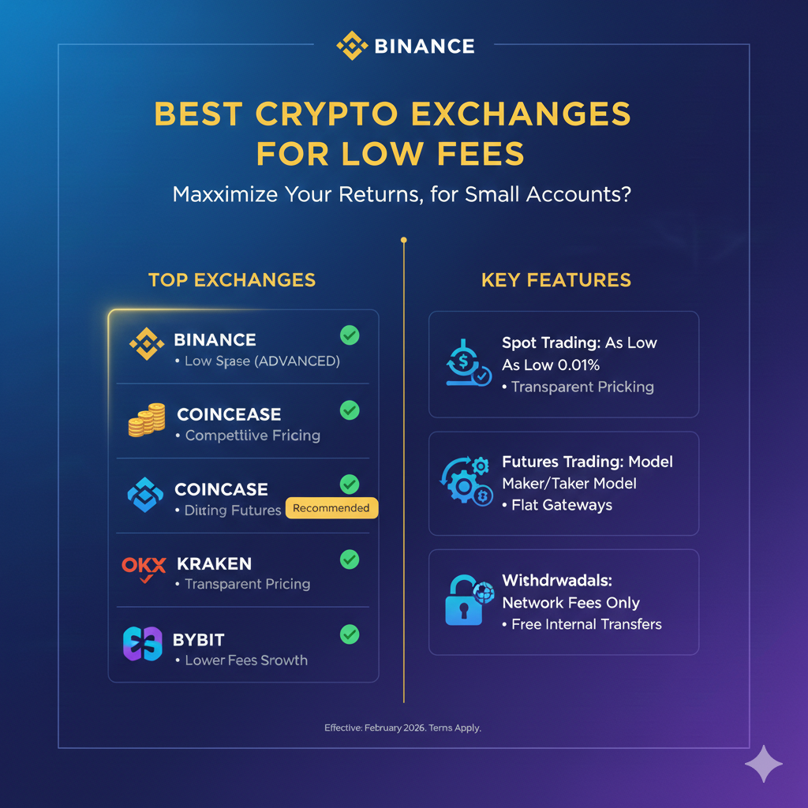

Best Crypto Exchanges for Low Fees in 2026 (Real Comparison Table)
Choosing a crypto exchange with low fees can significantly improve your profitability — especially if you trade frequently or use bots. In 2026, fee structures vary widely across platforms, depending on spot, futures, withdrawal fees and VIP tiers.
In this guide, we compare the best crypto exchanges for low fees and break down which option fits your trading style and account size.
1. Why Fees Matter
Fees are one of the main hidden costs in crypto trading. Even if you have a profitable strategy, excessive fees can cut your returns significantly over time. This is especially true for:
- High-frequency traders
- Bot or automation strategies
- Small accounts with limited capital
- Futures or leverage users
Understanding how exchanges calculate fees — and what discounts they offer — can give you a meaningful edge.
2. How We Compare Fees
This comparison covers the most important types of costs:
- Spot trading fees – base maker/taker fees
- Futures fees – maker/taker plus funding fees
- Withdrawal fees – what it actually cost to get crypto off the platform
- Discount programs – VIP tiers, native token discounts, rebates
We also separate exchanges into two audience types:
- Traders with small accounts
- High-volume and professional traders
3. Best Exchanges for Low Fees
Binance
Binance is widely considered one of the lowest-fee exchanges for both spot and futures trading, especially when you use Binance Coin (BNB) to pay fees or reach VIP tiers.
Bybit
Bybit offers competitive maker/taker fees and futures markets with good liquidity, making it a popular choice for active traders.
OKX
OKX often encourages spot makers with slightly lower maker fees and reasonable VIP benefits.
KuCoin
KuCoin’s basic fees are competitive, and the platform often offers promotions for low-volume traders or hobbyists.
Bitget
Bitget is emerging as a good option for futures fees and copy-trading incentives, plus rebates for high-volume traders.
Kraken
Kraken’s spot fees are simple and transparent, though slightly higher for low-volume traders than Binance or OKX. It remains a solid choice for security and regulatory compliance.
Coinbase
While Coinbase’s direct trade fees are typically higher than the others here, its advanced Pro tier improves competitiveness. Beginners may still find it expensive.
4. Real Fee Comparison Table (2026)
| Exchange | Spot Maker | Spot Taker | Futures Maker | Futures Taker | Withdrawal Fees | Discount Options |
|---|---|---|---|---|---|---|
| Binance | 0.10% | 0.10% | 0.02% | 0.04% | Varies by network | BNB & VIP |
| Bybit | 0.10% | 0.10% | 0.02% | 0.055% | Varies | VIP & rebates |
| OKX | 0.08% | 0.10% | 0.02% | 0.05% | Network fees | VIP tiers |
| KuCoin | 0.10% | 0.10% | 0.02% | 0.06% | Network fees | VIP |
| Bitget | 0.10% | 0.10% | 0.02% | 0.06% | Network fees | Rebates/VIP |
| Kraken | 0.10% | 0.20% | 0.02% | 0.05% | Network fees | Simple fee schedule |
| Coinbase Pro | 0.30% | 0.50% | 0.02% | 0.05% | Network fees | Maker rebates |
5. Other Factors to Consider
Low fees are important, but they aren’t the only thing that matters when choosing an exchange. You should also look at:
- Security — exchange safety track record
- Liquidity — how easy it is to enter/exit large positions
- Supported assets — the coins and futures markets available
- API & automation support — if you use bots
- Regulatory compliance — legal status depending on your region
6. How to Save on Fees (Tips)
- Enable native token discounts (like BNB on Binance)
- Use limit orders (maker) instead of market orders where possible
- Increase trading volume to unlock lower VIP tiers
- Select cheaper networks for withdrawals
- Use P2P where supported for fiat deposits/withdrawals
7. Conclusion
In 2026, Binance, Bybit and OKX are among the most cost-efficient exchanges for both spot and futures trading. Binance generally offers the most comprehensive discounts and the lowest effective fees, particularly for users who take advantage of its native token discounts and VIP tiers.
For small traders, choosing an exchange with low spot fees and stable liquidity is often more important than chasing futures leverage. Make sure to consider security, supported assets and your local region’s regulations when selecting the best platform.
By understanding fee structures and discount programs, you can significantly increase your net returns — especially if you’re trading often or using automated strategies.